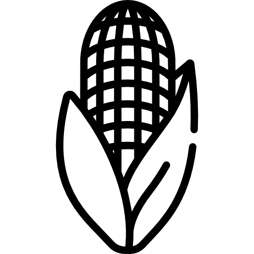

VENISON AND MUSHROOM RAGOUT, WITH PAPPARDELLE
150g diced venison per person
½ small onion per person
½ small carrot per person
½ stick celery per person
¼ leek per person
¼ bulb fennel per person
1 Portobello mushroom per person
Chopped garlic
Picked thyme leaves
*Jus*
Dried porcini mushrooms
Put the dried mushrooms in a bowl with enough boiling water to cover them.
Sear the venison in a large pan. When it is browned, remove the venison and throw in the chopped Portobello mushrooms. Once they are cooked, remove from the pan and add the chopped onion, leek, celery, fennel, and carrot. Sweat down at a medium heat for 5 minutes and add the thyme and garlic.
When it’s starting to stick to the pan, re-introduce the venison and mushrooms, add the porcini mushrooms (and the liquid, being careful not to add the sand/grit that will have gathered in the bottom of the bowl) and top it up with boiling water from the kettle, so the ingredients are covered by about 2cm water. Add the jus you had pre-prepared, or a stock cube is fine. You can also add a glass of nice red wine if you’re in to that. Bring to a low boil, then drop the heat to low. Leave covered for an hour so it gently cooks, then uncovered for an hour so the liquid will reduce.
After 2 hours, it will be a beautiful, rich stew, although it may need a little longer to thicken to your liking.
When it is at the desired texture, take it off the heat. Taste it to check the seasoning, and leave it to the side. Cook your pappardelle (or tagliatelle/spaghetti/whatever) as normal. When cooked, reintroduce your stew to a medium heat. Add the pasta and toss it around with a knob of butter, and some parmesan if you like. I like it with tonnes of black pepper.


GINGER'S FANCY WEBSITE